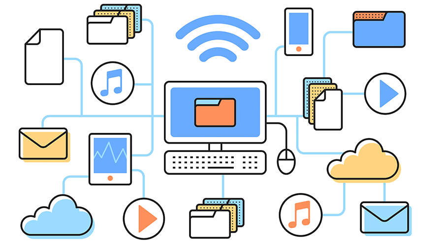

Informática

No mundo de hoje, ter o conhecimento básico de como utilizar um computador é fundamental. A informatização está presente em praticamente todos os setores da vida moderna. Com este curso de informática básica você terá acesso aos principais conhecimentos da informática, como:
- Compreender a parte física do computador (peças e placas);
- Ligar, desligar, entradas e saídas de conexões;
- Como utilizar a Área de Trabalho;
- Como navegar, pesquisar, baixar arquivos na Internet;
- Como utilizar os programas básicos do Windows e muito mais...
Este curso de informática é ideal para todos que desejam aprender corretamente como utilizar o computador e também para aqueles que desejam aprimorar ou testar seus conhecimentos de Informática Básica. É um curso essencial para o currículo em qualquer área de atuação.
Com o seguinte conteúdo programático:
- Introdução
- Aula 1: Ligar e Desligar e Assuntos Básicos
- Aula 3: Pesquisar na Internet e Download
- Aula 4: Editores de Texto
- Aula 5: Planilhas de Cálculo
- Aula 6: Gerador de Apresentações
- Aula 7: Complementos
- Aprendendo um pouco sobre celulares Android
- Estrutura do Computador
- Informações sobre o mundo da Informática
- Bibliografia/Links Recomendados